EasyFisk · Alle stilforslag
Alle 12 forslag – A til L
Se hele appen i den valgte stilen, med den nye logoen
Se det nye forslaget satt sammen fra valgene dine
Disse forslagene endrer oppsett, skrift, former og prioritering av innhold. Alle bildene vises nedenfor, i rekkefølge fra A til L. Ingenting er gjemt i lukkede seksjoner.
Trykk på et bilde for full størrelse og zoom med to fingre. Dette er stilforslag; knappene inne i bildene er ikke interaktive.
Mitt foreløpige valg: H for en praktisk fiskeapp, eller K for et mykere og mer særpreget uttrykk. J er det mest rendyrkede alternativet med få hovedvalg.
A – Klar elveblå
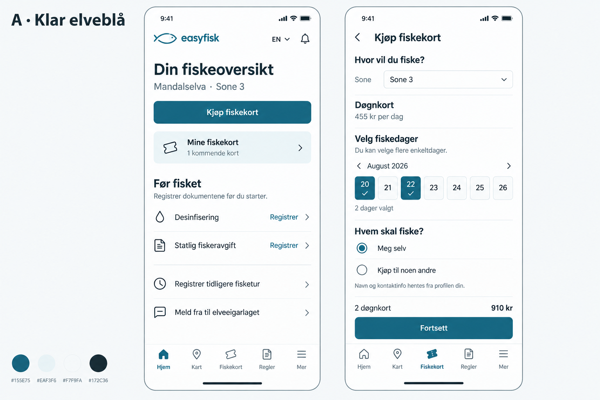
Åpne bilde AB – Nordisk natur
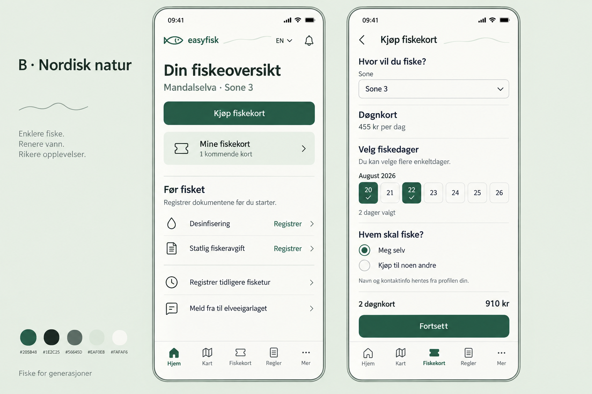
Åpne bilde BC – Presis og lys
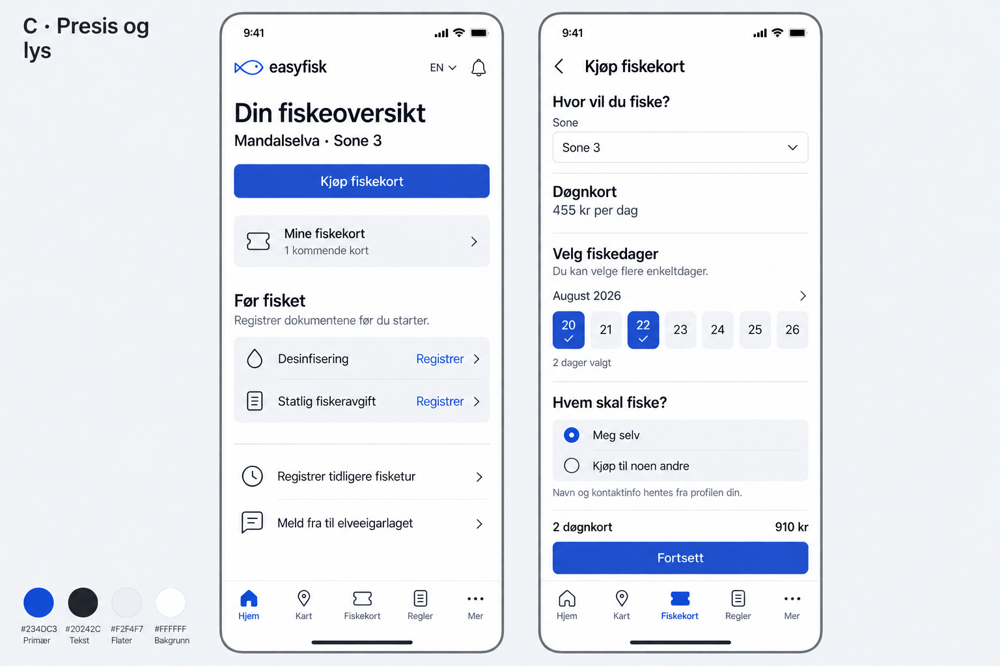
Åpne bilde CD – Åpen og typografisk
Store overskrifter, få bokser og enkle rader. Kjøpsknappen ligger nederst, nær tommelen.
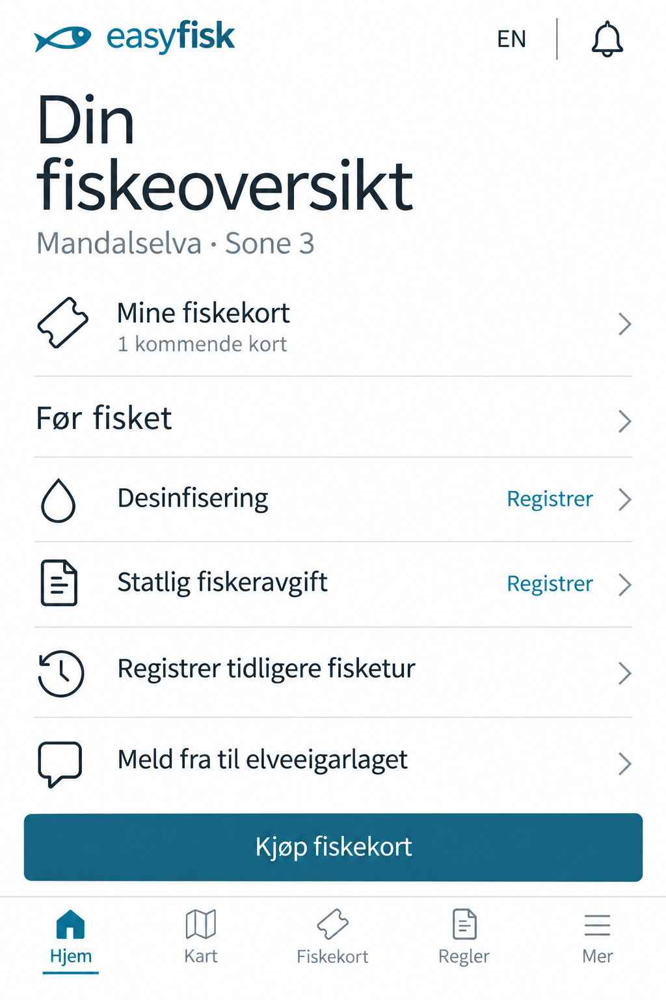
- Skrift: Humanistisk sans-serif med stor, lett overskrift.
- Oppsett: Åpen liste med skillelinjer og kjøpsknapp nederst.
Rolig og oversiktlig. Lange lister trenger tydelig gruppering.
E – Modulær oversikt
Avrundede flater og store snarveier i rutenett. Fiskekortene får et eget område.
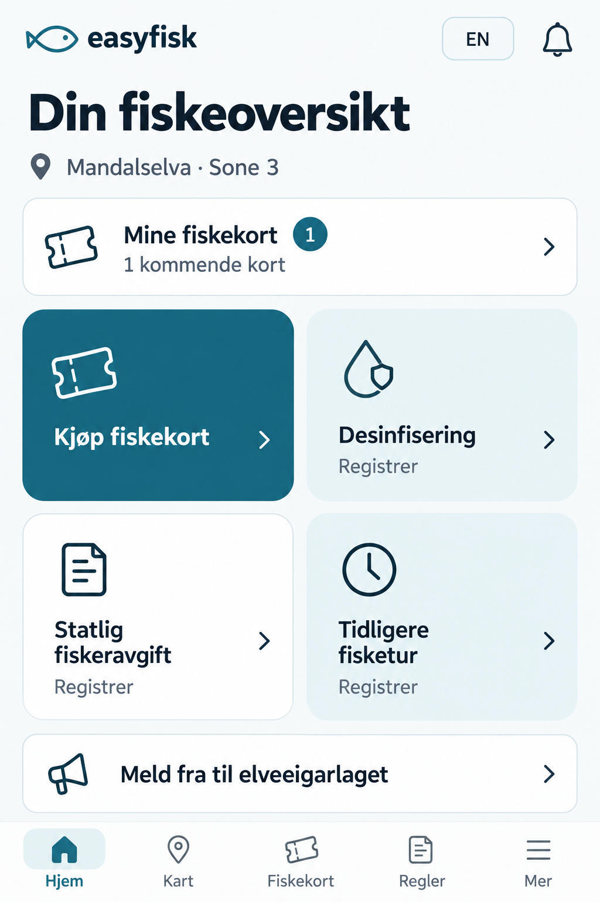
- Skrift: Mykere, avrundet sans-serif.
- Oppsett: Eget kortområde og fire store snarveier i rutenett.
Lett å kjenne igjen handlinger. Ved stor tekst må rutenettet bli én kolonne.
F – Rolig veiviser
En samlet sjekkliste viser hva som gjenstår før fisket. Hvert punkt kan åpnes direkte.
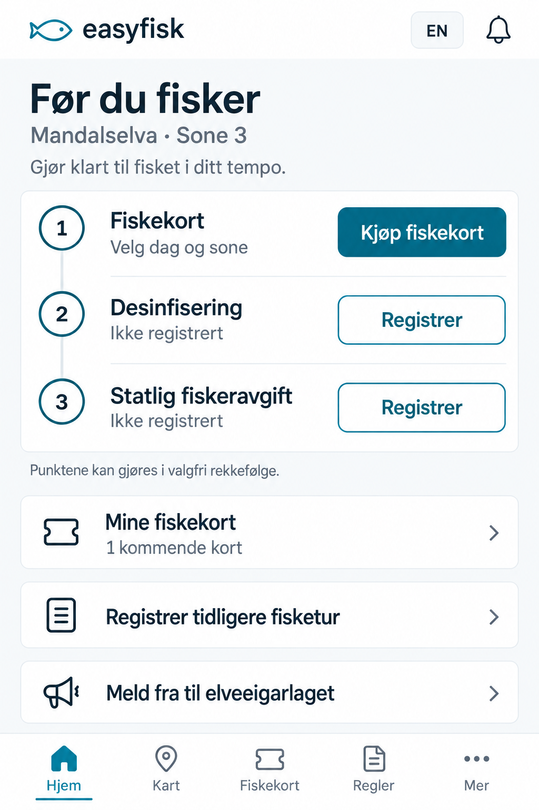
- Skrift: Humanistisk sans-serif med tydelige bokstavformer.
- Oppsett: Én samlet sjekkliste, med nummererte punkter.
Passer nye brukere. Punktene kan åpnes i valgfri rekkefølge.
G – Elva i sentrum
Et enkelt kart gir stedskontekst. Kortkjøp og dokumenter samles i et tydelig panel under.
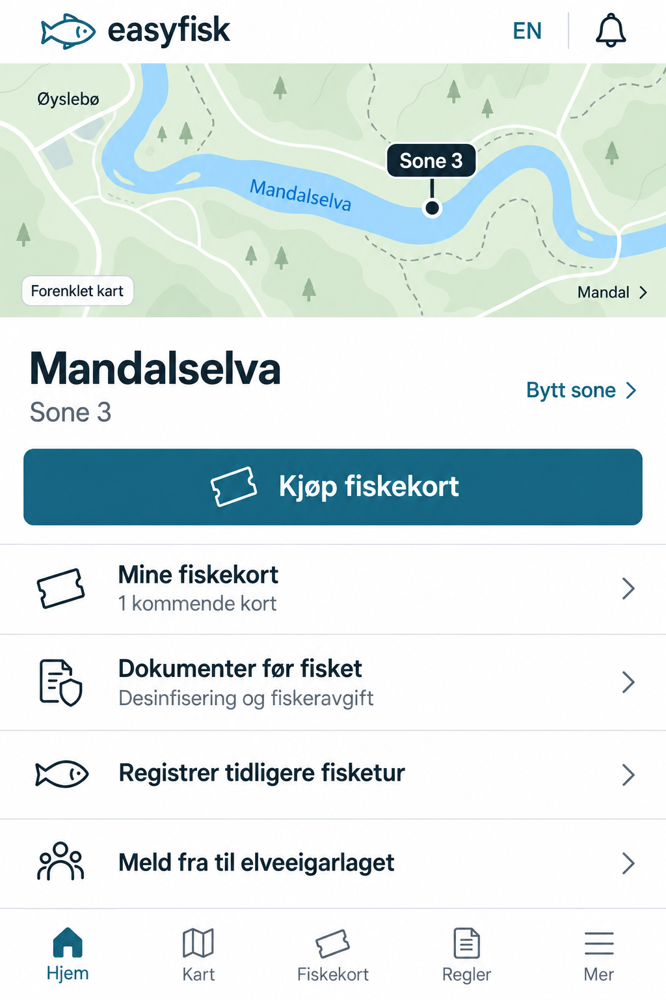
- Skrift: Nøytral systemskrift.
- Oppsett: Kart øverst, handlinger i et panel under.
Gir stedskontekst. Kartet må suppleres med tekst og vanlig sonevalg.
H – Digital lommebok
Fiskekortet får hovedrollen som en tydelig billett. Dokumenter samles under, og kjøp har en egen fast navngitt knapp.
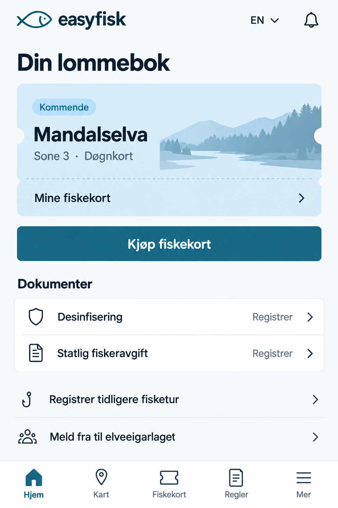
- Skrift: Nøytral sans-serif, foreslått Inter.
- Oppsett: Ett stort billettkort med markert kant, egen kjøpsknapp og en samlet dokumentliste.
- Inspirasjon: Bank og kollektivtransport: det du eier er lett å finne.
God for dem som allerede har kort. Uten kjøpte kort erstattes billetten med en enkel tomtilstand.
I – Turplanlegger
Hjemskjermen organiseres rundt neste fisketur. En datolinje og en agenda gir et helt annet oppsett enn knapper i bokser.
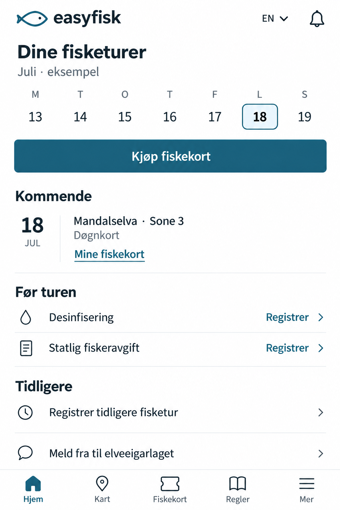
- Skrift: Åpen humanistisk sans-serif, foreslått Source Sans 3.
- Oppsett: Datoer øverst, smal datokolonne og innhold gruppert etter kommende tur, forberedelser og historikk.
- Inspirasjon: Planleggingsapper: tydelig skille mellom kommende og tidligere.
Passer dem som planlegger flere dager. Datoene er bare eksempler og angir ingen fiskesesong.
J – Store handlingsvalg
Tre store valg møter brukeren. Tydelige ord, rette former og svært lite dekor gir et enkelt og robust uttrykk.
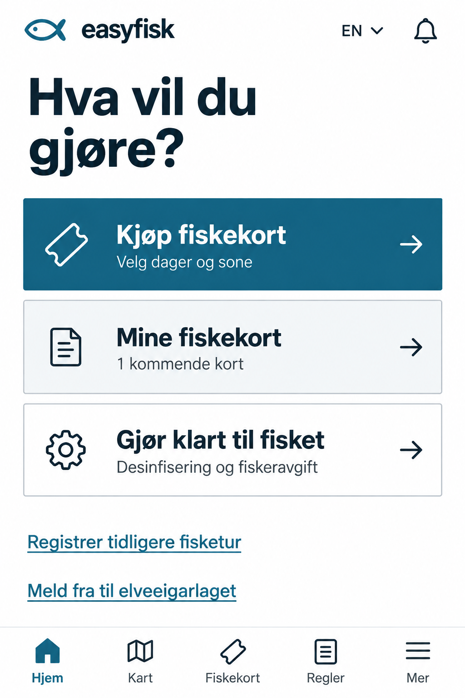
- Skrift: Tydelige bokstavformer, foreslått Atkinson Hyperlegible.
- Oppsett: Tre brede handlingsflater med nesten rette hjørner. Mindre brukte handlinger ligger som lenker under.
- Inspirasjon: Offentlige tjenester og helse: konsentrasjon om oppgaven.
Lett å orientere seg. Desinfisering og fiskeravgift krever ett ekstra trykk via «Gjør klart til fisket».
K – Rolig elvevenn
En liten elveillustrasjon, mykere bokstavformer og avrundede knapper gjør appen mer personlig. Handlingen er fortsatt lett å finne.
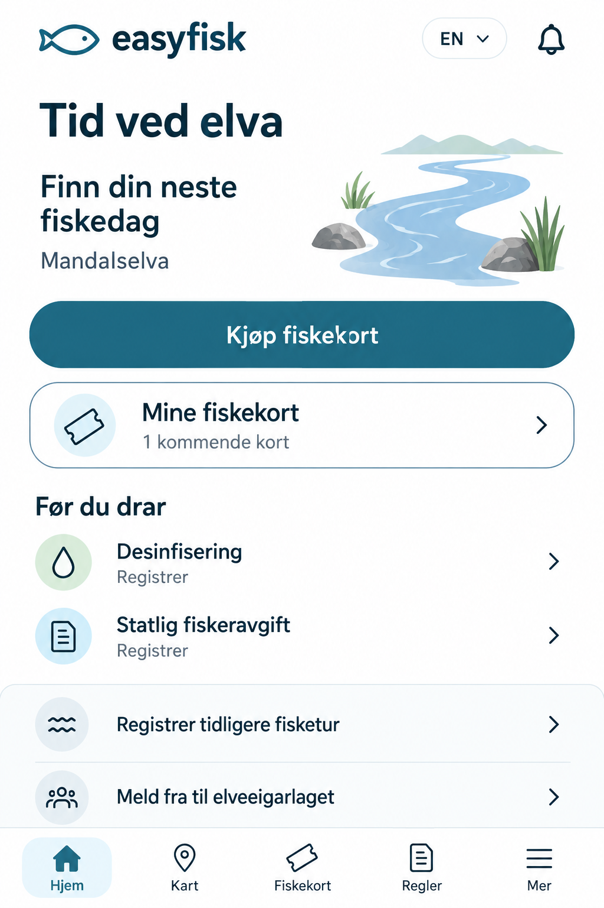
- Skrift: Myk, åpen sans-serif, foreslått Nunito Sans.
- Oppsett: Asymmetrisk topp med tekst og liten illustrasjon, bred kjøpsknapp og romslig felt for egne kort.
- Inspirasjon: Velværeapper: et vennlig uttrykk og tydelig innholdshierarki.
Mer særpreg og varme. Illustrasjonen er dekor, og skal ikke skyve viktige handlinger langt ned.
L – Samlede seksjoner
Innhold samles i seksjoner som kan åpnes og lukkes. Kjøpsknappen er alltid synlig, mens detaljene vises ved behov.
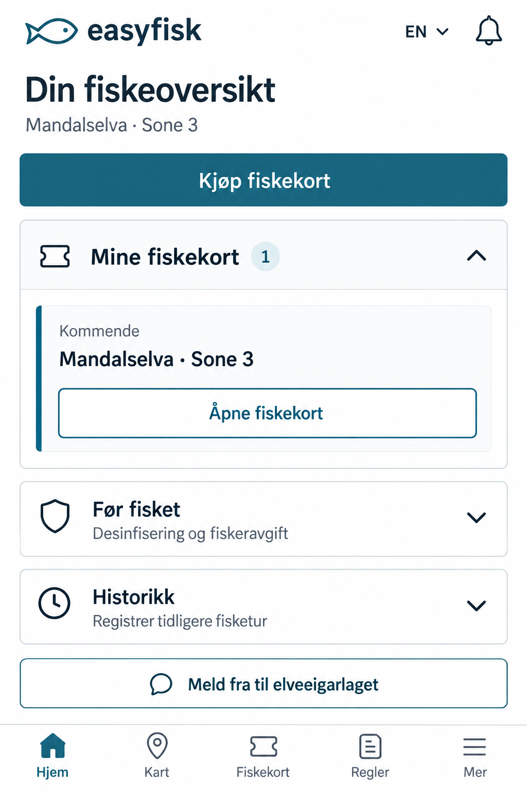
- Skrift: Presis sans-serif, foreslått IBM Plex Sans.
- Oppsett: Tydelige seksjonsoverskrifter, ett åpent kortområde og sammenfoldede områder for forberedelser og historikk.
- Inspirasjon: Produktivitetsverktøy: vis detaljer når brukeren trenger dem.
Gir en ryddig skjerm med mye innhold. Kan gjøre funksjoner mindre synlige og må ha tydelig åpen/lukket-merking.
Hva jeg har undersøkt
Jeg har undersøkt offisielle designeksempler og retningslinjer fra bank, kollektivtransport, helse, offentlige tjenester, planlegging og velvære. Dette er inspirasjon til EasyFisk, ikke en rangering av popularitet eller en påstand om hvordan alle appene ser ut i dag. Flere av de publiserte eksemplene er eldre.
- Monzo · bank: Hjemskjermen samler kontoer og aktivitet, med mulighet for å velge detaljnivå. Min overføring til EasyFisk er en tydelig oversikt over kort du allerede eier. Monzos publiserte design fra 2023.
- Entur · kollektivtransport: Kortkomponenter gir en kort forklaring før man går videre. Jeg tar med tydelige etiketter, konsekvent avstand og enkel gruppering. Entur Linje: kort.
- NHS · helse: Typografien bygger på et konsekvent hierarki og sparsom bruk av fet skrift. For EasyFisk betyr det roligere brødtekst og overskrifter som skiller seg ut gjennom størrelse og luft. NHS: typografi.
- GOV.UK · offentlige tjenester: Oppgaver deles i tydelige spørsmål, med forklaring der den trengs. J bruker denne tanken til å gi få, forståelige hovedvalg på hjemskjermen. GOV.UK: oppgavefokus.
- Things · planlegging: Dagens og kommende oppgaver ordnes etter tid, med klare overskrifter og detaljer som åpnes ved behov. Dette inspirerer agendaen i I og seksjonene i L. Things: design og funksjoner.
- Todoist · kalender: Kalenderen visualiserer kommende oppgaver. I låner idéen om tidsoversikt, med en enklere datolinje som passer en mobilskjerm. Todoist: kalendervisning.
- Headspace · velvære: Illustrasjon og vennlig formgivning kombineres med tydelige innganger til innhold. K bruker en liten elveillustrasjon for identitet, med teksten på en egen lys flate. Apples designintervju fra 2023.
Hva dette betyr for dagens EasyFisk
På skjermbildet ditt har mange flater omtrent samme tyngde: kraftig fet skrift, store fylte knapper og avrundede rammer. Det gjør det vanskelig å se hva som er viktigst. Jeg anbefaler én tydelig hovedhandling, mindre bruk av fet skrift, færre konkurrerende rammer og en konsekvent måte å vise dokumenter og egne fiskekort på.
«Mine fiskekort» skal få en romslig, tydelig plass som passer resten av uttrykket. «Kjøp fiskekort» beholder navn og fører alltid til kjøp. Status må forklares med ord, ikke bare en farget prikk.
Enkelhet og universell utforming
Forslagene sikter mot vanlig tekst på 17–18 px, tydelige sans-serif-skrifter, moderat skriftvekt og trykkflater på minst 48 × 48 CSS-piksler. Dette er våre designmål; WCAGs minstekrav til målstørrelse er 24 × 24 med angitte unntak. WCAG: målstørrelse.
I den ferdige appen må normal tekst ha minst 4,5:1 kontrast, stor tekst minst 3:1, og innholdet må fungere ved tekstforstørrelse og omflyting til smale skjermer. WCAG: kontrast og omflyting.
Bildene er konseptskisser. Fontnavnene er forslag til implementering, ikke en garanti for eksakt font i bildene. Universell utforming må også kontrolleres med faktisk tekstforstørrelse, tastatur, fokus og skjermleser når et oppsett bygges.
Hvilken retning liker du?
Du kan velge én bokstav eller kombinere deler: for eksempel «H sitt oppsett med K sin skrift og mykere former». Et valg her endrer ikke appen automatisk.
H fremhever fiskekortet. I fremhever turene. J fremhever handlingene. K gir mer personlighet. L samler detaljene.
Konseptbilder laget med innebygd imagegen. Innhold og datoer er illustrerende. Bildeprompter H–L (engelsk) · Bildeprompter D–G (engelsk).